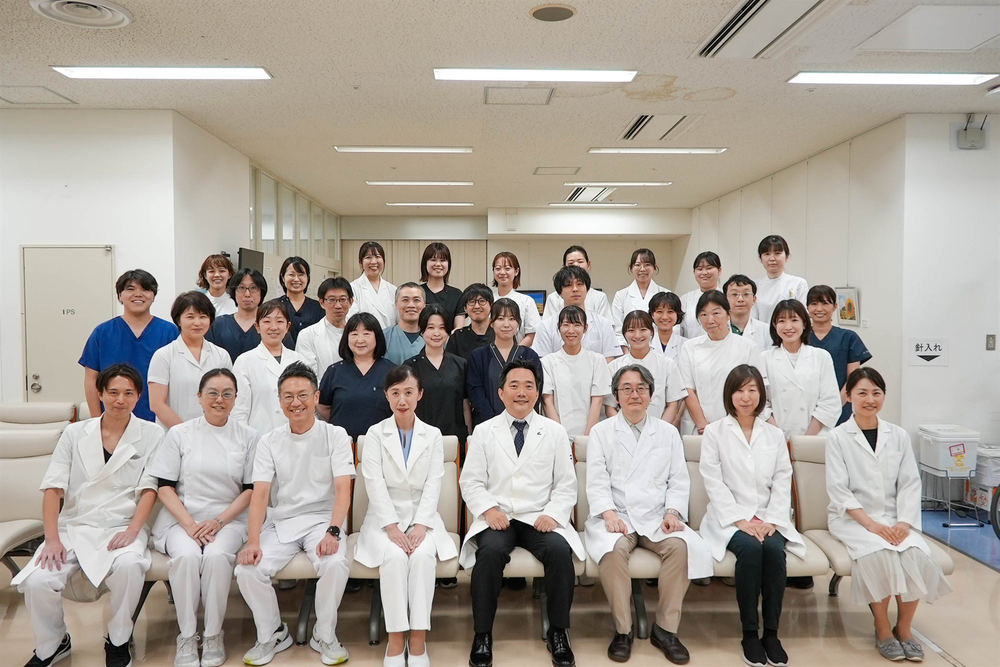

CLINICAL
Clinical Practice
臨床・診療
Clinical Laboratory 臨床検査部門
臨床検査医学分野は、東京科学大学病院の検査部と密接に連携し、患者さんの診断・治療に不可欠な臨床検査を提供しています。血液学・生化学・免疫学・微生物学など幅広い検査領域において、高精度な検査の実施と検査医学の発展に取り組んでいます。
臨床検査に関する詳細・診療案内はこちらからご覧ください
東京科学大学病院検査部
CLINICAL
臨床・診療
臨床検査医学分野は、東京科学大学病院の検査部と密接に連携し、患者さんの診断・治療に不可欠な臨床検査を提供しています。血液学・生化学・免疫学・微生物学など幅広い検査領域において、高精度な検査の実施と検査医学の発展に取り組んでいます。
臨床検査に関する詳細・診療案内はこちらからご覧ください
東京科学大学病院検査部